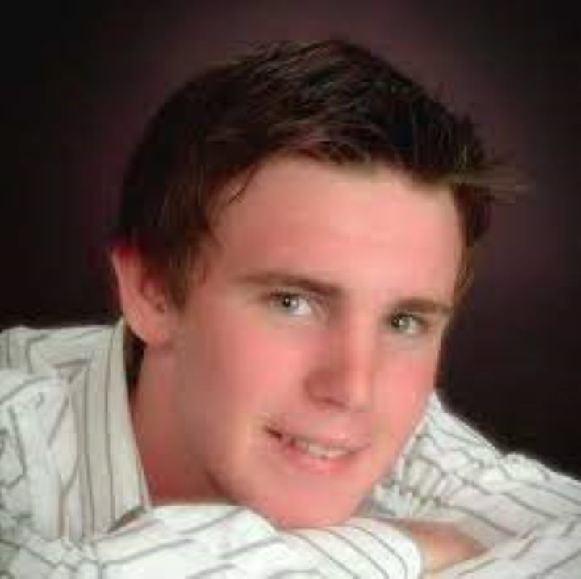

A Family's Courage
In December 2007, Shelley and Todd Persinger found themselves living a nightmare. Their oldest child, 17-year-old Chris, had died in a car crash. His parents received a call from the tissue bank that Chris was a registered donor and, because he was only 17, they needed to give permission to donate. Shelley and Todd honored Chris’ wish to help save and heal lives as a donor.
A Sister's Resilience
After Chris’ death, his sister Caitlyn immersed herself in sports to feel closer to her brother. They had shared a passion for soccer, and Chris had always pushed Caitlyn to the limit, encouraging her to do her best. Caitlyn became an outstanding high school athlete and had hopes to play soccer in college. Right before her senior year, Caitlyn tore her meniscus and ACL* while playing soccer. The recovery period for this type of injury is lengthy – usually about six months or longer.
"Sometimes, the greatest heroes are the ones who save lives even after they're gone."
“My injury hit me harder than I thought it would,” Caitlyn said. “I didn’t have this outlet that I could turn to anymore.” Caitlyn was desperate to get back out on the playing field, not only for herself and her career, but also for her brother.
Her Brother's Legacy
The day before Caitlyn’s surgery, the family received a call from ATSF. There was one allograft left from Chris’ donation that had not yet been transplanted, and it was the exact tissue that Caitlyn needed. The next morning, Caitlyn received her brother’s donated tissue to repair her knee.
"In giving, we receive."
Caitlyn soon recovered, returning to the soccer field in her senior year and going on to play in college. “Having his tissue in my knee is a constant reminder that he is with me,” Caitlyn said. “I always knew Chris was watching over me, but I never thought he could be a part of me like he is now.” Caitlyn hopes her family’s story serves as a reminder that tissue donation can change lives.